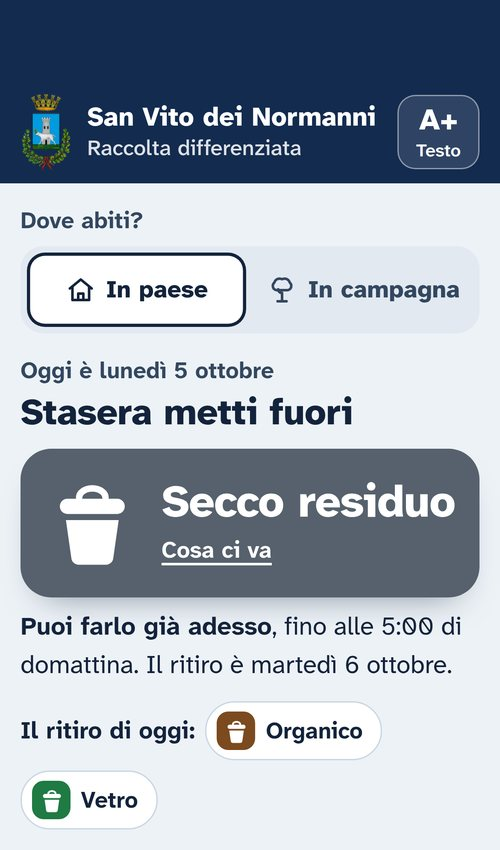
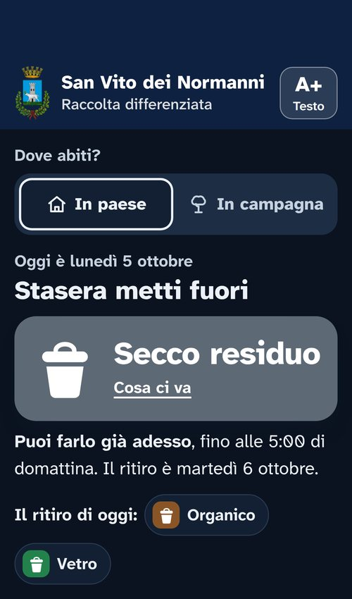
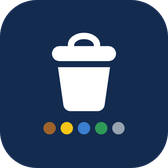
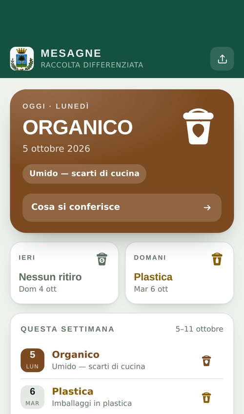
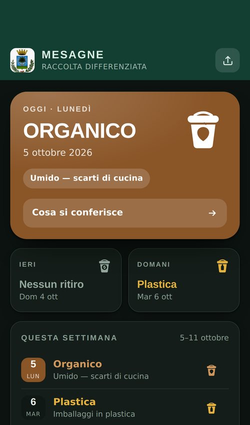

Gestione end-to-end
Progetti seguiti dall’avvio al rilascio.
Pianificazione e monitoraggio delle attività, coordinamento di team cross-funzionali, KPI e reporting per garantire visibilità costante su avanzamento, rischi e priorità.
Aperto a nuove opportunità
Consultant · Digital & Data Transformation
Affianco aziende ed enti pubblici nei progetti di innovazione e trasformazione digitale.

Dal 2018 lavoro su progetti enterprise, tra consulenza e software: Accenture, Micro Focus e oggi Deloitte NextHub. Il mio ruolo è far dialogare business e tecnologia, dall’analisi delle esigenze fino ai risultati.
Punti di forza
Un profilo che unisce business e tecnologia: metodo consulenziale, attenzione ai dati e capacità di far collaborare stakeholder di business, team IT e fornitori.
Gestione end-to-end
Pianificazione e monitoraggio delle attività, coordinamento di team cross-funzionali, KPI e reporting per garantire visibilità costante su avanzamento, rischi e priorità.
Dal requisito al rilascio
Raccolta e formalizzazione dei requisiti, configurazione delle piattaforme, validazione dei rilasci. Traduco le esigenze degli stakeholder in specifiche chiare per i team tecnici, e viceversa.
Supporto decisionale
One-pager, business case, presentazioni e dashboard: sintesi chiare, dati verificati e raccomandazioni orientate all’azione.
Percorso
Dall’analisi funzionale in Accenture al supporto applicativo in Micro Focus, fino alla consulenza in Deloitte NextHub.
2024 — oggiRuolo attuale
Progetti di open innovation e trasferimento tecnologico sulla piattaforma xTech / NextHub, basata su un motore di raccomandazione con intelligenza artificiale: scouting di soluzioni innovative, matchmaking con le esigenze dei clienti, one-pager e analisi per il management. Supporto alle attività di business development e finanza agevolata.
2019 — 2024Software enterprise
Supporto specialistico sulle soluzioni ADM di Micro Focus (ALM, UFT One, UFT Mobile), anche sulla piattaforma custom Spring Q-Cent in Enel: configurazione e personalizzazione, risoluzione di problemi tecnici, test e validazione dei rilasci, documentazione e formazione degli utenti.
2018 — 2019Consulenza
Analisi delle esigenze degli utenti e traduzione in requisiti funzionali, modellazione dei processi, analisi dei KPI e coordinamento con sviluppatori, project manager ed esperti di dominio in progetti Agile per grandi clienti.
Progetti selezionati
Open innovation01
Qualità del software02
Dati e automazione03
Sedi e progetti
Milano, Roma e Bari: open innovation, software enterprise e ricerca applicata.
Open innovation · Ventures
Organizzazioni
Utility · Energia · Finanza agevolata
Organizzazioni
Ricerca · Trasferimento tecnologico
Organizzazioni
Side project
Nel tempo libero ho progettato e sviluppato due web app gratuite che dicono ai cittadini di San Vito dei Normanni e di Mesagne quali rifiuti mettere fuori ogni giorno. Sono pensate per tutti, anche per chi ha poca dimestichezza con lo smartphone.



Web app gratuita · Puglia
In campagna il venerdì la raccolta cambia con la settimana del mese. L’app parte dalla domanda che conta di più: cosa mettere fuori stasera, in paese o in campagna.
Dove lo butto? Oltre 400 rifiuti: si cerca un oggetto e l’app dice in quale raccolta va.
Centro di raccolta. Gli orari e, in tempo reale, se adesso è aperto o chiuso.
Calendario del mese. Tutti i ritiri, con i giorni festivi segnalati.
Testo più grande. Un tasto ingrandisce i testi, composti in un carattere ad alta leggibilità.


Web app gratuita · Puglia
Il giovedì vetro e metalli si alternano con carta e cartone, a seconda della settimana del mese. L’app mostra a colpo d’occhio cosa tocca oggi, ieri e domani.
Questa settimana. Tutti i ritiri, giorno per giorno.
Cosa si conferisce. L’elenco per ogni raccolta, dall’organico al secco residuo.
Centro di raccolta. Indirizzo in via Marangio e orari di tutti i giorni.
Ingombranti. I numeri per prenotare il ritiro, uno raggiungibile anche su WhatsApp.
Rassegna stampa
Quotidiano web della Città di Mesagne
Il quotidiano web della città racconta l’app: basta aprirla sullo smartphone per sapere quale raccolta tocca oggi, ieri e domani, compresa l’alternanza del giovedì tra vetro e metalli e carta e cartone. Gratuita, senza pubblicità né registrazione, funziona anche offline.
Come sono fatte
Google Lighthouse · mobile, Differenziata San Vito dei Normanni
Servizi informativi non ufficiali, realizzati a titolo personale: per le variazioni del calendario fanno fede le comunicazioni dei rispettivi Comuni.
Pubblicazioni
Un articolo scientifico sulla piattaforma su cui lavoro e un libro scritto per passione.
Articolo scientifico · Open access
L’articolo presenta NextHub, la piattaforma di open innovation che usa l’intelligenza artificiale per abbinare le iniziative delle aziende alle soluzioni innovative più pertinenti, grazie a un motore di raccomandazione semantico e multilingue.
Il mio contributo
Libro · Ebook
Il mio primo libro, scritto per passione: settant’anni di storia dei videogiochi, dalle origini a oggi.
Competenze
Piattaforme, dati, qualità del software
Metodo, relazione, comunicazione
Formazione
Studi
Università del Salento
I.T.I.S. “G. Giorgi”
Micro Focus Certified Professional
Formazione continua su Agile, cybersecurity, Power BI, public speaking e digital writing.
Contatti
Sono interessato a ruoli da Senior Consultant o Manager nella consulenza direzionale e nella trasformazione digitale, presso società di consulenza, aziende o scale‑up. I settori in cui ho maturato più esperienza sono energy & utilities, industria e pubblica amministrazione.